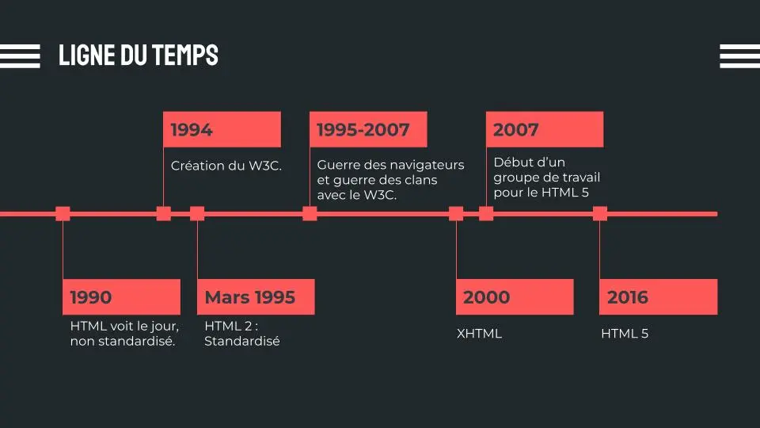

Signifie "HyperText Markup Language"
C’est un langage qui permet de composer des pages web.
Il représente en fait une des trois technologies de base que tout développeur web doit connaître car elle permet de définir la structure et le contenu de vos pages web.
On parle de
L'origine du HTML remonte au début du Web.
En effet, il a été inventé vers les années 1990 afin qu'il puisse présenter les documents qui circulent sur la toile et établir des liens entre eux à travers les liens hypertextes (ou hyperliens).
w3c
W3C ou World Wide Web
Le W3C ou World Wide Web Consortium, est un organisme international qui développe des standards pour le Web afin que les gens puissent communiquer efficacement à travers Internet, autour de formats ouverts garantissant une meilleure inter-opérabilité (c'est-à-dire une meilleure compréhension des systèmes hétérogènes à travers des données et langages standardisés).
Le consortium existe depuis 1994 et est dirigé par l'inventeur du Web, Tim Berners-Lee.
Il est composé d'une équipe fixe et des membres (dont plusieurs centaines d'entreprises partenaires). Les membres délèguent des ingénieurs au sein du W3C et participent ainsi à l'élaboration des spécifications techniques pour les technologies du Web. De nombreux membres actifs font partie des équipes de développement des navigateurs (Microsoft, Mozilla, Apple, Opera, Google, etc).
- Tim Berners-Lee
- L’HTML est basé sur le SGML (autre système de balise)
- Naissance officielle de l’HTML en août 1991
- HTML était non standardisé et ne comprenait que quelques balises (titres, paragraphes, listes et hyperliens)
- Chaque navigateur implémente son propre HTML > incompatibilité
- Octobre 1994 : Création du W3C
- Mars 1995 : HTML 2
- 1997 : HTML 3.2 puis HTML 4
- Les navigateurs prennent beaucoup de liberté avec la norme
- La guerre des navigateurs!
W3C
- Abandonne l’HTML
- Développe le XHTML
- Structure uniquement
- Mise en forme confiée au CSS
WHATWG
- Poursuivre le développement de l’HTML
- Conteste l’autorité et le fonctionnement du W3C
- 2007 : Abandon de l’XHTML par le W3C
- Le w3C met en place un groupe de travail HTML5
- Fin 2016 : Spécification officielle de l’HTML5 (17 ans après l’HTML 4 !!)
- Plus de numéro de version au-delà de HTML 5
- HTML 5 rétrocompatible avec toutes les versions précédentes
- Nombreuses balises dépréciées toujours dans la norme officielle
- L’HTML ne s’occupe que de la structure du document, pas de sa mise en forme